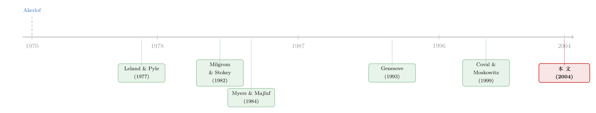

买家为什么不肯走远？——用税务评估的「手抖」，量出房产市场的信息暗河
本文读的是 Garmaise & Moskowitz (2004, Review of Financial Studies)：他们用「各地税务评估质量的高低」造出一把不被信息本身污染的尺子，去丈量美国商业地产市场里的信息不对称——结果发现，当一个地方的公开信息越差，买家就越不肯走远（高信息不对称地区买家平均只从 149.88 公里外赶来，低信息不对称地区却高达 313.31 公里），知情的经纪人也越倾向于只把房子卖给同行。至于「用融资方式去化解信息问题」这一支，证据则是又弱又乱。
1 引言：一个人人都信、却没人测得准的东西
信息不对称（asymmetric information）大概是现代金融学里被引用得最多、却又被「直接检验」得最少的概念之一。从 Akerlof (1970) 那个著名的二手车「柠檬市场」开始，理论家们写出了一座又一座精巧的大厦：逆向选择、信号传递、啄食顺序……每一栋都美轮美奂。可一旦有人想走进现实，拿数据问一句「这些机制到底重不重要」，麻烦立刻就来了。
麻烦出在哪儿？出在你想测的那个东西，本身就藏在暗处。
想想看，研究者通常会拿什么来代理「信息不对称的程度」？分析师覆盖、公司规模、买卖价差（bid-ask spread）。可这些变量没有一个是干净的。分析师为什么不去覆盖一家公司？也许正是因为这家公司不透明——于是「覆盖少」既是信息差的原因，又是它的结果。买卖价差里固然有逆向选择的成分，可它同时也被流动性、库存成本搅在一起。换句话说，这些代理变量统统是内生的：它们是信息环境的产物，而不是外生地砸下来的一记冲击。用一个被信息污染过的尺子去量信息，结论自然永远说不清。
所以真正的难题，从来不是「信息不对称重不重要」，而是一句更朴素的话——你能不能先找到一把不被信息本身污染的尺子？ 这篇论文最漂亮的地方，恰恰就在这把尺子上。
2 一把意想不到的尺子：税务局的「手抖」
作者把目光投向了一个谁都没想到的角落：房产税评估（property tax assessment）的质量。
逻辑是这样的。在美国，地方政府要给每一处房产估个值，按这个值征税。可估值这件事，各郡、各评估辖区做得参差不齐——有的地方评得又准又细，有的地方评得粗枝大叶。怎么衡量「准不准」？税务系统自己会做一种叫评估率离散系数（coefficient of dispersion, COD）的统计：把每处房产的「评估值 ÷ 真实成交价」算出来，再看这一堆比率彼此散得有多开。散得越开，COD 越高，说明评估质量越差——同样一栋楼，政府的估价可能离市场价差出十万八千里。
这里是全文的关键一跃：一个地方的 COD 越高，意味着关于房产价值的公开信号越不可靠，于是这个地方就是一个高信息不对称的环境。
为什么这把尺子是外生的？因为评估质量主要是一桩行政管理上的事——它取决于当地评估机构的人手、技术、预算和惯例，而不取决于某一笔具体交易里的买家和卖家是谁、他们各自知道些什么。买卖双方没法选择自己头顶上的 COD，更没法操纵它。这就和分析师覆盖那类「随交易内生变动」的代理变量划清了界限。
尺子有多大的刻度差异？在样本的七个州里，COD 从内华达的 5.82 一路拉到伊利诺伊的 58.32，整体均值 29.36。也就是说，不同地区的「公开信息质量」相差可以接近十倍。有了这么大的外生变异，剩下的事就好办了：去看看在 COD 高的地方和低的地方，市场参与者的行为是不是真的不一样。
这套思路的精髓，是把一个「测不准」的概念，换成了一个可以被独立测量、又恰好与之高度相关的代理。这也是为什么后来很多实证文献会反复回头借鉴它——找一把外生的尺子，往往比再写一个模型更难、也更值钱。（关于「逆向选择如何被一把更干净的尺子重新量过」，可参见《价差是真的，成本却是假的——逆向选择究竟从哪里抬高了「要求回报」》。）
3 理论的弹药库：当公开信息变差，无知者会怎么自保？
有了尺子，还得知道「该去看什么」。这篇论文没有自造一个新模型，而是把现成的逆向选择理论拆成一串可检验的预测，逐条拿去和数据对质。我们不妨顺着它的思路，始终扣住一个核心问题：当一个市场的公开信息变差，那些处于信息劣势的人，会用什么办法保护自己？
第一种自保，是「不跟知情者玩」。 Milgrom & Stokey (1982) 的「无交易定理（no-trade theorem）」说得很干脆：理性而无知的人，不愿意和一个明显比自己懂得多的对手成交——因为对方愿意跟你交易，本身就是个坏消息。落到房产上，远方的买家天然就比本地卖家更不了解一个街区的经济社会动态。于是第一个预测出现了：
- 预测 1：买家主要来自附近。
- 预测 2：在高信息不对称（高 COD）的地区，买卖双方之间的距离更短。
注意，预测 1 其实「别的理论也能解释」——比如买家要就近监督租户，本地化也很自然。但预测 2 是逆向选择独有的：只有当「信息差随 COD 加剧」时，距离才会随 COD 系统性地缩短。这一步把识别从「买家本地化」这个泛泛的事实，收紧到了「信息不对称特有的指纹」。
第二种自保，是「挑那些看得懂的房子」。 同样是被信息差吓退的远方买家，与其干脆退出市场，不如转去买那些信息更充分的房产——有长长的收入与价格历史、容易评估的标的。于是：
- 预测 3：预测 2 的效应，在收入历史短的房产上尤其强。
- 预测 4：在高信息不对称地区，历史短的房产更不容易被拿出来卖。
第三种自保，是「市场自动分层」。 如果知情者能被认出来，那么有效率的安排是——知情者之间互相交易，把无知者隔在另一个圈子里。在商业地产里，谁是「明牌的知情者」？是那些自己下场当本金交易（acting as principal）的经纪人。数据里，有 6.9% 的交易，买方或卖方本身就是一个为自己账户操作的经纪人。于是：
- 预测 5：自营的经纪人更可能把房子卖给别的经纪人，且在高信息不对称地区尤其如此。
把这三条串起来，其实是同一个故事的三个侧面：公开信息一旦变差，无知者就用「靠近」「挑透明的」「只跟同类玩」这三招把自己围起来。 这就是全文反复要讲透的那一个核心。
论文还有一支讲融资结构的支线（预测 6–12），分别对应两个逆向选择模型：模型 A 是「先定价、再融资」的啄食顺序——卖方融资（vendor-to-buyer, VTB）因为卖家最懂这处房产，信息成本最低，故在高信息不对称时应更盛行；模型 B 是「定价与融资同时决定」的信号分离模型（Leland & Pyle 1977；DeMarzo & Duffie 1999）——卖家保留一笔 VTB 贷款，相当于保留一个权益头寸来给房产质量打信号。两个模型在「VTB 是否随信息不对称上升」上一致，但只有模型 B 预测成交价会随卖家保留的份额上升（预测 12）。这条支线，正是后文「证据又弱又乱」的来源。
4 识别策略与数据：一份难得干净的样本
数据来自 COMPS.com——美国一家领先的商业地产成交数据库。它通过逐一联系买方、卖方和经纪人并交叉核对来采集数据，在业内被认为相当准确。原始样本有 18,687 笔交易，发生在 1996 年 1 月 1 日到 1999 年 3 月 30 日（约 42 个月），覆盖内华达、马萨诸塞、马里兰、弗吉尼亚、得克萨斯、伊利诺伊、科罗拉多七个州；其中满足「有成交价、有融资数据、有当事人身份、有房产位置」这些初始要求的，是 10,351 笔。观测单位是单笔房产交易。
这份数据有一个常被低估的好处：商业地产的贷款几乎都是无追索权（nonrecourse）的——贷款只以这处房产作担保，不牵连借款人的其他个人资产。这意味着，融资决策所关联的相关信息，就是关于这处房产本身的信息。这一点和公司金融里的许多研究形成鲜明对比：在公司层面，你很难分清一笔融资反映的是「在手资产」的信息还是「众多新项目里某一个」的信息；而在这里，信息的指向是干净的。
识别策略说白了就是：把「买卖距离、是否经纪人对经纪人成交、融资构成、成交价」这些行为变量，回归到 COD 以及它与房产历史长短等变量的交互项上，并控制州、房产类型、交易规模等特征。由于因变量里有不少是 0/1 的离散选择或被截断（truncated）的比例，作者特意用了对非正态更稳健的估计量——二元响应用 Klein & Spady (1993) 的半参数估计，截断回归用 Powell (1986) 的对称截尾最小二乘——以免正态假设出错把结论带偏。
5 主要结果：买家不肯走远，知情者只跟同行玩
先看那条最直观、也最有冲击力的证据。
整体上，商业地产的买家平均从 231.92 公里外赶来（卖家更远，264.38 公里）——这本身就说明这是个全国性买家进场的市场。可一旦按 COD 把样本劈成两半，画面就变了：在高 COD（高信息不对称）的地区，买家平均只从 149.88 公里外来；而在低 COD的地区，买家却来自 313.31 公里之外。公开信息越差，买家越往近处缩。 这正是预测 2 的样子。
这组 149.88 vs 313.31 是单变量对比，里头掺了城市密度的影响——比如伊利诺伊（芝加哥）COD 高达 58.32，买家距离只有 128.62 公里，很大程度是因为芝加哥本身就是个密集的大市场。所以这个赤裸裸的对比只能当「入口」，真正的说服力来自论文回归里控制了州与房产特征之后 COD 仍然显著为负，以及预测 3 那个「与历史长短的交互」——后者很难用「城市密度」一句话糊弄过去：密度可以让买家整体变近，却解释不了「为什么偏偏是历史短的房子，对信息环境最敏感」。
沿着这个核心往下，市场分层的证据同样成立：自营经纪人确实更倾向于把房产卖给别的经纪人，而且这种「知情者抱团」的倾向在高信息不对称环境里更强（预测 5）。把「买家靠近」「挑长历史的房子」「经纪人对经纪人成交」三条放在一起，作者的结论相当明确——在商业地产里，信息不对称不是一个可以被估价师轻轻抹平的小摩擦，而是实实在在地塑造着谁和谁、在哪里、以什么标的成交。
那融资这条支线呢？这里要诚实：论文自己的措辞是「mixed and weak」。用融资方式去化解信息问题的证据又弱又乱，作者也几乎找不到对信号传递理论的支持——即成交价并不像模型 B 预言的那样，随卖家保留的份额而系统性地上升（预测 12 落空）。值得玩味的是，这个「融资并非主要由信息驱动」的结论，恰恰和公司金融实证文献里的主流发现合拍：Graham & Harvey (2001) 的 CFO 问卷说信息考量基本不驱动证券选择，Fama & French (2002) 发现杠杆最低的「不分红公司」反而发最多股票，都和教科书里的啄食顺序对不上。
换个角度看，这篇论文给出了一个很有意思的「不对称」：在「谁来交易、跟谁交易」这种参与和匹配的层面，信息不对称的力量清晰可见；可一旦下沉到「用债还是用股」这种融资合约的设计层面，它的解释力就迅速衰减。 这本身就是对资本结构理论的一记温和的质疑。
6 文献脉络：从柠檬市场到一把外生的尺子
把这篇论文放回它所在的那条河流，脉络其实很清晰。
源头当然是 Akerlof (1970)——二手车的柠檬市场，第一次把逆向选择讲成了一个谁都听得懂的故事。理论这一支随后兵分两路：一路是 Milgrom & Stokey (1982) 的无交易定理，告诉我们无知者会如何退出；另一路是 Myers & Majluf (1984) 的啄食顺序和 Leland & Pyle (1977)、DeMarzo & Duffie (1999) 的信号传递，告诉我们融资合约会如何被信息塑造。这两路，恰好就是本文「参与/分层」与「融资结构」两支预测的理论母体。

可理论再漂亮，实证始终卡在那把「测不准」的尺子上。于是有了一连串在各个稀奇古怪的市场里找抓手的努力：Genesove (1993) 在批发二手车市场里找逆向选择（还发现它出奇地难记录在案），Chiappori & Salanié (2000) 和 Finkelstein & Poterba (2002) 在保险与年金市场里找。与此同时，Coval & Moskowitz (1999, 2001) 沿着另一条线推进——他们发现基金经理偏爱本地股票、且能从本地持仓里赚到超额收益，把「地理就是信息」这件事钉了下来。这篇论文站在两条线的交汇处：它既继承了 Coval-Moskowitz「用距离捕捉信息」的直觉，又补上了前人最缺的那一块——一把外生的、独立于交易本身的信息尺子。
（关于「距离即信息」的另一面，可参见《你不是在对冲，你在买你熟悉的东西》；关于「先卖给中间商如何治好柠檬市场」这一逆向选择的解法，可参见《承诺去交易：为什么「先卖给中间商」反而能治好柠檬市场》；关于房产估值困难本身如何收紧信贷，可参见《房子越「难定价」，越借不到钱》。）
7 评论与延伸（Q&A + 研究方向）
(a) 几个可能的疑问
Q：COD 真的外生吗？会不会只是「城市密度 / 市场厚度」换了个名字？
这是对识别最致命的一击，也是论文最需要正面回应的地方。密集的大市场往往评估质量参差（COD 高），同时买家也因为机械的原因更本地化——两者可能都源自「密度」，而非信息。论文的辩护有两层：一是回归里直接控制州与城市/非城市哑变量、房产类型；二是更聪明的——依赖交互预测（预测 3、4）。一个纯粹的密度故事可以让买家整体变近，却很难解释「为什么 COD 的效应偏偏集中在收入历史短的房产上」。把识别从「主效应」挪到「交互项」，是这类研究自保的标准动作，但读者心里仍应保留一分警惕。
Q：为什么是商业地产，而不是住宅？
因为商业地产更异质、更不流动，外人更难估值，信息考量也就更突出——作者甚至说，这里的信息问题可能比 Akerlof 的二手车更严重：一辆 1998 年的雅阁是高度同质的，而西区一栋刚刚士绅化街区里的写字楼是独一无二的。加上无追索权贷款让「融资信息=房产信息」，使它成了检验信息效应难得干净的实验室。
Q：「买家更近」就一定是逆向选择吗？
不一定——这正是预测 1 与预测 2 的分工。预测 1（买家本地化）确实有别的解释（监督租户、管理便利）；论文真正下注的是预测 2（距离随 COD 缩短）和预测 3（这种缩短在短历史房产上更强）。这两条带着「信息不对称特有的指纹」，不是泛泛的本地偏好能复制的。
Q：经纪人凭什么算「知情者」，而不是替买家服务的中介？
论文给了三条理由：经纪人活跃地以本金身份入场（6.9% 的交易里一方就是经纪人），等于在和客户抢便宜货；他们按成交价抽佣，有动机怂恿买家多出钱；在很多司法辖区，买方经纪人法律上是卖方经纪人的「子代理」，对卖方负有忠实义务。三条加起来，买家没法指望经纪人提供无偏信息——这和股票市场里「券商分析师并不替你消除信息差」的证据如出一辙。
Q：融资证据这么弱，是模型错了，还是地产市场太特殊？
更可能是前者的普适版。论文特意指出，「融资并非主要由信息驱动」这一结论与公司金融的主流实证（Graham-Harvey 2001、Fama-French 2002、Shyam-Sunder & Myers 1999 的部分结果）是一致的——啄食顺序在静态横截面上本就支持不足。所以与其说地产特殊，不如说这篇论文在一个干净的环境里，又给「信号/啄食顺序在合约设计层面解释力有限」添了一块砖。
Q：这套方法今天还有用吗？
它的真正遗产不是某个系数，而是一个模板：与其继续用内生的代理（分析师、规模、价差）去量信息，不如去现实世界里翻找一个外生地决定「公开信息质量」的制度变量。这个模板可以移植到债券、信贷、乃至跨境投资的许多角落——下面就是几个方向。
(b) 几个可能的研究问题与提案
1. 把「评估质量」搬到市政债（municipal bond）上。 - 【经济故事】地方政府财政信息的透明度（预算编制质量、审计及时性、披露评级）天然有高低之分，正如房产评估有 COD。透明度差的地方，市政债投资者面对更大的信息不对称，可能要么要求更高利差，要么更依赖本地承销与本地买家——这是预测 2「距离随信息恶化而缩短」在债市的直接翻版。 - 【可行性】中。需要把某种外生的财政透明度指标与市政债一级/二级数据（如 MSRB）以及承销商—投资者地理信息拼起来。识别难点仍是「透明度是否独立于本地经济基本面」。（与《「距离已死」？可在市政债的承销桌上，离得近反而更便宜》直接对话。）
2. 外资持有人与公司债的「信息距离」。 - 【经济故事】本文说无知者会「靠近」并「挑透明的标的」。把买家换成跨境投资者，把物理距离换成「信息距离」：外资是否系统性回避那些信息环境更差（披露少、评级分歧大、私有发行人）的公司债？当某种外生冲击改善了一国/一类发行人的信息环境，外资份额是否随之上升？ - 【可行性】中。需要外资持债的微观数据（如 TIC、各国央行持有人数据）叠加发行人层面的不透明度代理。识别上可借助「可投资度/纳入指数」这类外生事件。（可与《外资真是「蝗虫」吗？》及《外资能买的股票，为什么更「抖」？》互参。）
3. 公司债做市商网络里的「市场分层」。 - 【经济故事】本文最干净的结果之一是「知情经纪人只卖给知情经纪人」。在公司债的场外（OTC）市场，做市商网络呈核心—边缘结构——是否在信息越不对称的债券（复杂条款、低评级、低成交）上，交易越集中于核心做市商之间，把「不知情」的边缘交易商隔在外圈？这正是预测 5 的债市版本。 - 【可行性】高。TRACE 加上交易商身份能重建做市商网络，债券层面的不透明度代理也现成。识别上可用债券异质性做横截面，再叠加透明度规则变更（如 TRACE 分阶段披露）做准自然实验。（与《同样的交易商，不同的客户：核心—边缘网络是被「挑」出来的》高度相关。）
4. 远程成交时代，「买家靠近」这条规律还成立吗？ - 【经济故事】疫情把大量房产尽调搬到了线上。如果「靠近」本质上是为了获取本地软信息，那么当远程成交工具普及、公开数据更丰富后，距离—信息不对称的关系应当减弱。这等于给本文的机制做一次「跨时代」的稳健性检验。 - 【可行性】中。需要近十年带地理标签的商业地产成交数据（如 CoStar），以远程成交工具的普及或某次外生冲击（疫情）作为时间断点。难点是公开数据改善与远程工具普及往往同时发生，需小心拆开。
我的判断
这篇论文最大的贡献，不在任何一个系数，而在那一次「换尺子」的方法论跳跃——用房产税评估质量的高低，造出一个独立于交易本身的信息环境度量。在一个「人人都说信息重要、却人人都测不准」的领域里，这种把抽象概念锚定到外生制度变量上的做法，本身就是稀缺品。它的实证结论也讲得很克制、很诚实：参与和匹配层面（靠近、挑长历史、经纪人抱团）证据扎实，融资合约层面证据又弱又乱，而后者反而和公司金融的主流发现互相印证。
要我说担忧，集中在识别的那一环：COD 与城市密度、市场厚度、房产异质性高度缠绕，主效应里「信息」和「密度」很难彻底分开。论文靠交互预测（与历史长短的交互）把这条缝补上了大半，但读者仍应记得，最有说服力的不是「买家更近」这个主效应，而是「短历史房产对信息环境最敏感」这个交互——后者才是逆向选择真正的指纹。
后续我最想看到的，是把这把「外生尺子」的思路推进到信用市场：当一个发行人/一类资产的公开信息质量被某种外生制度变量决定时，它的持有人结构（本地 vs 外资、核心做市商 vs 边缘）、它的流动性、它的利差，会不会复刻出本文在地产里看到的那套「无知者自保」的几何学？如果会，那么这篇二十年前的房产研究，就远不止是一篇关于房子的论文了。
参考文献
- Akerlof, G. (1970). The Market for 'Lemons': Quality Uncertainty and the Market Mechanism. Quarterly Journal of Economics 84, 488–500.
- Chiappori, P., & Salanié, B. (2000). Testing for Asymmetric Information in Insurance Markets. Journal of Political Economy 108, 56–78.
- Coval, J., & Moskowitz, T. (1999). Home Bias at Home: Local Equity Preference in Domestic Portfolios. Journal of Finance 54(5), 2045–2074.
- Coval, J., & Moskowitz, T. (2001). The Geography of Investment: Informed Trading and Asset Prices. Journal of Political Economy 109, 811–841.
- DeMarzo, P., & Duffie, D. (1999). A Liquidity-Based Model of Security Design. Econometrica 67, 65–99.
- Fama, E., & French, K. (2002). Testing Trade-Off and Pecking Order Predictions About Dividends and Debt. Review of Financial Studies 15, 1–34.
- Garmaise, M., & Moskowitz, T. (2004). Confronting Information Asymmetries: Evidence from Real Estate Markets. Review of Financial Studies 17(2), 405–437.
- Genesove, D. (1993). Adverse Selection in the Wholesale Used Car Market. Journal of Political Economy 101, 644–665.
- Graham, J., & Harvey, C. (2001). The Theory and Practice of Corporate Finance: Evidence from the Field. Journal of Financial Economics 60, 187–243.
- Leland, H., & Pyle, D. (1977). Information Asymmetries, Financial Structure, and Financial Intermediation. Journal of Finance 32, 371–387.
- Milgrom, P., & Stokey, N. (1982). Information, Trade and Common Knowledge. Journal of Economic Theory 26, 17–27.
- Myers, S. (1984). The Capital Structure Puzzle. Journal of Finance 39, 575–592.
- Myers, S., & Majluf, N. (1984). Corporate Financing and Investment Decisions When Firms Have Information that Investors do not Have. Journal of Financial Economics 13, 187–221.